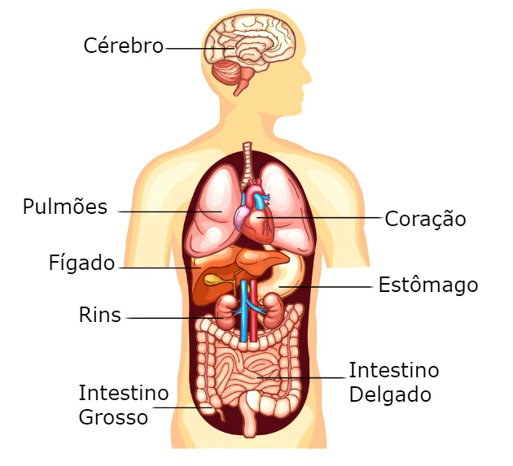

Orgãos
Os órgãos são formados por tecidos, ou seja, por coleções de células estruturadas que mesmo não sendo idênticas trabalham entre si.[59] Por exemplo, o coração é composto principalmente por cardiomiócitos e pelo tecido conjuntivo.[60] Os órgãos são considerados estruturas de extrema importância,[61] e o corpo humano possui cinco órgãos vitais: cérebro, coração, pulmões, fígado e rins, sem os quais não é possível a sobrevivência do organismo,[62] pois caso algum deles pare de funcionar o óbito é a consequência se não houver intervenção médica de urgência.[63]
Cavidades: 1. Craniana 2. Torácica 3. Abdominal 4. Pélvica 5. Ventral 6. Abdominopélvica 7. Dorsal a. Mediastino superior b. Canal vertebral c. Cavidade pleural d. Cavidade pericárdica dentro do mediastino e. Diafragma Na maioria das vezes os órgãos estão localizados em cavidades internas,[61] com exceção da pele que é considerada a maior estrutura do organismo,[64] e as cavidades são subdividas em dorsal e ventral, dentro destas estão localizados os órgãos internos. Para fins de pesquisa e localizações mais exatas, as cavidades dorsal e ventral são também subdivididas: a dorsal em cavidade craniana (onde está localizado o cérebro) e canal vertebral (no qual passa a medula espinhal, que é o prolongamento do sistema nervoso central); a ventral em: cavidade torácica (localidade em que o coração e pulmões, as partes torácicas dos grandes vasos e outras estruturas importantes estão), e a abdominopélvica que é dividida em cavidade abdominal (onde está o estômago, fígado, vesícula biliar, baço, pâncreas, intestino delgado e grosso, glândulas suprarrenais e rins) e pélvica (região em que se situam os órgãos reprodutivos e também o reto, bexiga e uretra).[65][66][67]
O corpo é formado por múltiplos órgãos que fazem partes de sistemas, os quais são formados pela reunião de estruturas que realizam funções especificas dentro do corpo. Cada órgão possui um papel dentro do corpo,[68] por exemplo o coração faz parte do sistema circulatório e sua função é bombear o sangue,[69] enquanto o estômago pertence ao sistema digestivo e sua função é realizar a digestão química e mecânica dos alimentos, de modo que transforma o bolo alimentar em quimo para que posteriormente a digestão seja continuada no intestino delgado.[70][71] Os órgãos vestigiais não possuem funções específicas e vitais e, são resultado das adaptações evolutivas acometidas pelo ser humano. Essas estruturas já tiveram alguma função principal anteriormente, mas com a evolução, suas funcionalidades foram modificadas e deixaram de exercer sua função principal anterior. O melhor exemplo de um órgão vestigial é o apêndice cecal, que é uma pequena extensão tubular do intestino grosso, e constitui vestígio de um órgão redundante que nas espécies ancestrais tinha funções digestivas, mas com as modificações dessa estrutura a sua função foi modificada e na modernidade é relacionada com a proteção da população de bactérias que habita e interfere no bom funcionamento do sistema digestivo.[72][73][74]
A palavra órgão advém do latim organum[75] e do grego órganon, que em tradução literal significa "instrumento",[76] e somente no século XVII o termo começou a ser usado para fins anatômicos.[77] Aproximadamente há quatro mil anos atrás nas regiões da Mesopotâmia e do Antigo Egito, a população já estava fazendo investigações acerca da descoberta de melhores informações sobre o corpo, e para isso tentaram descrever o básico da vida, relacionando ideias errôneas da função do fígado e dos outros órgãos (constantemente tentavam explicar a função dessas estruturas em relação à "alma" do ser humano).[78]
Clique no botão play se quiser uma trilha sonora: